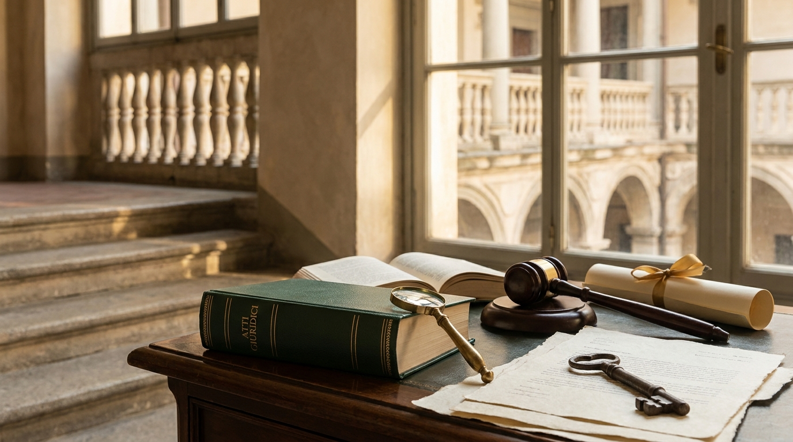

Caduta sulle scale condominiali: come si prova il danno
Chi cade sulle scale di un condominio non ottiene automaticamente il risarcimento. Serve dimostrare che un'anomalia delle scale ha causato la caduta, e spesso questa prova passa dai testimoni. Una recente pronuncia della Corte d'Appello di Reggio Calabria chiarisce i confini della responsabilità del condominio quale custode dei beni comuni.

Il caso e perché conta
Una caduta sulle scale condominiali può generare lesioni serie e spese rilevanti. Ma il danneggiato che chiede il risarcimento al condominio si scontra spesso con un ostacolo: la prova. Non basta essere caduti; occorre dimostrare *perché* si è caduti e che la causa sia riconducibile a un'anomalia del bene comune.
La Corte d'Appello di Reggio Calabria (sent. n. 119/2021) ha ribadito un principio consolidato: la responsabilità del condominio esiste, ma resta a carico di chi agisce l'onere di provare il nesso causale tra il difetto della scala e l'evento dannoso.
Inquadramento normativo
Le scale rientrano tra le parti comuni dell'edificio ai sensi dell'art. 1117 del Codice civile. Il condominio ne è quindi custode e risponde a titolo di responsabilità oggettiva secondo l'art. 2051 c.c. ("danno cagionato da cose in custodia").
Responsabilità oggettiva significa che il custode risponde anche senza una sua colpa specifica: è sufficiente che il danno derivi dalla cosa custodita. Tuttavia, questo non trasforma il condominio in un assicuratore automatico. Il danneggiato deve comunque provare due elementi: l'esistenza di una situazione di pericolo (ad esempio, gradini sconnessi o una sostanza oleosa sul pavimento) e il nesso causale, cioè il collegamento diretto tra quell'anomalia e la caduta.
Quando manca la prova diretta, entra in gioco l'art. 2727 c.c. sulle presunzioni: il giudice può ricostruire il fatto attraverso indizi gravi, precisi e concordanti. Ma gli indizi vanno comunque allegati e sostenuti, spesso proprio dalle testimonianze di chi era presente.
Implicazioni pratiche
Per chi subisce la caduta, il messaggio è chiaro: la sola circostanza di essere scivolati sulle scale comuni non è sufficiente a ottenere il risarcimento. Occorre documentare lo stato dei luoghi e ricostruire la dinamica.
I testimoni oculari assumono un ruolo decisivo. In assenza di una caduta filmata da telecamere o di un verbale immediato, sono spesso le dichiarazioni di chi ha assistito a colmare il vuoto probatorio. Un testimone può confermare la presenza della sostanza scivolosa, l'illuminazione insufficiente o il difetto del gradino.
Per il condominio e per l'amministratore, la pronuncia conferma invece l'importanza della manutenzione documentata. Dimostrare di aver gestito correttamente le parti comuni, segnalato i pericoli e mantenuto le scale in sicurezza riduce sensibilmente il rischio di soccombenza in giudizio.
Attenzione anche al caso fortuito, unica vera via di liberazione dalla responsabilità oggettiva. Se il condominio dimostra che la caduta è dovuta a una condotta imprudente del danneggiato o a un evento imprevedibile e inevitabile, la richiesta risarcitoria può essere respinta.
Cosa fare in concreto
- Documenta subito lo stato dei luoghi. Scatta fotografie della scala, della sostanza presente o del difetto, indicando data e ora; se possibile, conserva indumenti e calzature indossati.
- Raccogli i dati dei testimoni. Annota nome e recapito di chiunque abbia assistito alla caduta o possa confermare lo stato della scala nei momenti precedenti o successivi.
- Richiedi un riscontro medico tempestivo. Recati al pronto soccorso e conserva referti e certificati: collegano le lesioni alla dinamica dichiarata.
- Segnala l'accaduto all'amministratore per iscritto. Una comunicazione formale fissa la data dell'evento e attiva eventuali coperture assicurative del condominio.
- Per l'amministratore: tieni traccia della manutenzione. Verbali, contratti di pulizia, interventi e segnalazioni costituiscono la prova della corretta custodia delle parti comuni.
Consigliamo, in entrambe le posizioni, di valutare per tempo la solidità del quadro probatorio prima di avviare o resistere a un'azione risarcitoria. La differenza tra una richiesta accolta e una respinta si gioca quasi sempre sulla qualità delle prove raccolte nelle prime ore successive all'evento.
---
*Contributo informativo a cura di Tamburro & Partners - Avv. Giuseppe Tamburro. Non costituisce parere legale.*
Ogni condominio ha una storia a sé.
Se gestisci un'amministrazione e vuoi un confronto su una specifica questione condominiale, scrivi allo studio. Ti rispondiamo entro un giorno lavorativo.